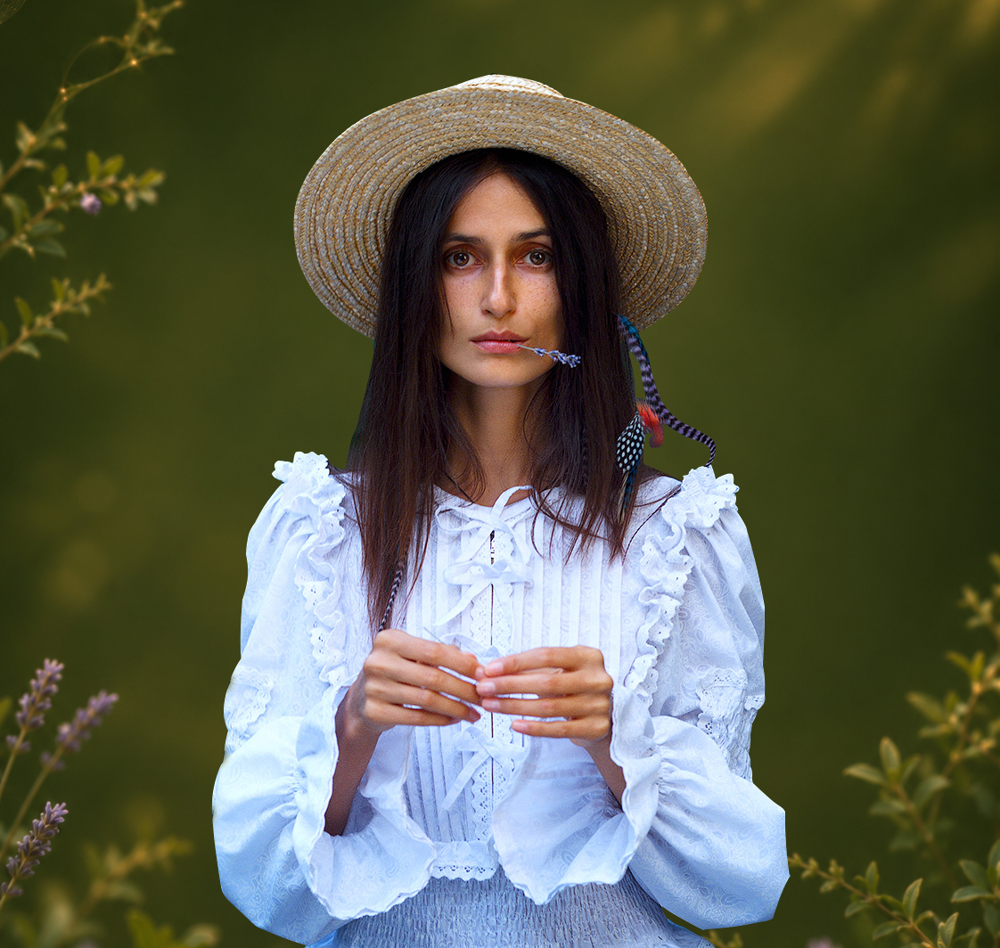
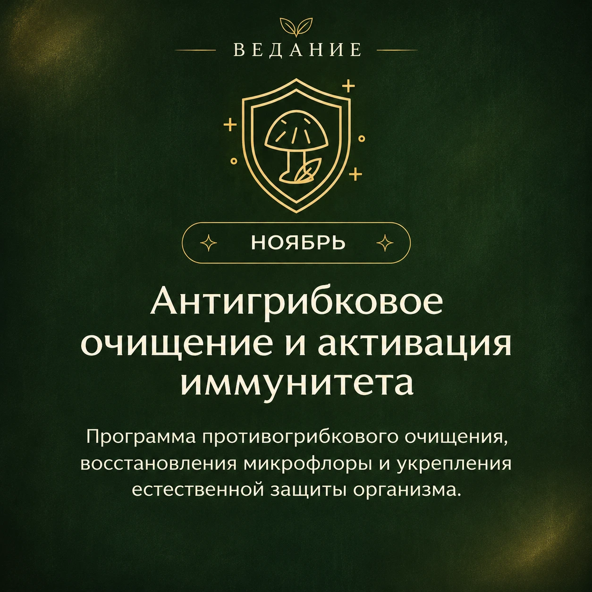
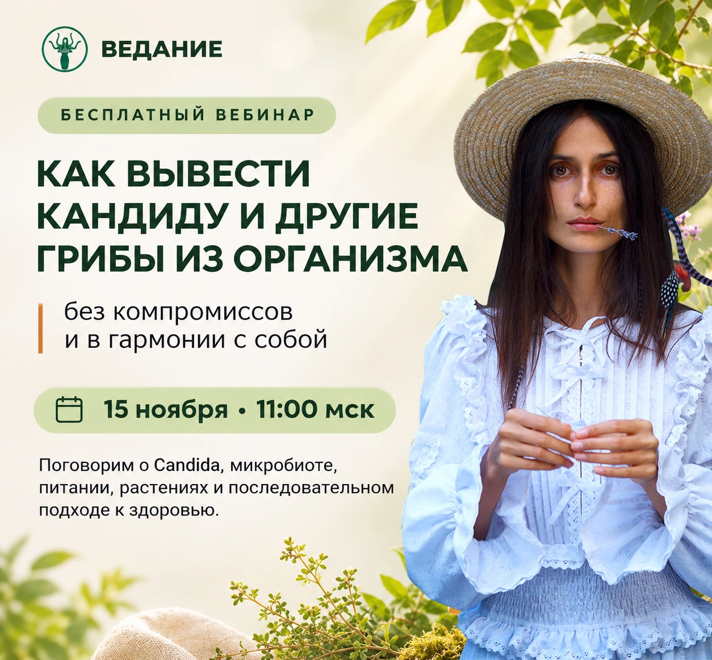

Чеснок
Аллицин
Свежий, измельчённый, в соусах
Наташа Сведовая · практический материал
Почему молочница возвращается — и с чего начать, чтобы разобраться с причинами?
01 / Начнём с причин
После антибиотиков возникают новые симптомы. Меняется пищеварение. Знакомые способы восстановления дают временное облегчение.
Candida может естественным образом присутствовать на слизистых и в кишечнике. Её рост связан с состоянием микробиоты, иммунной защитой и другими факторами.
Главный вопрос — какие условия способствуют повторению проблемы именно у вас?
Самопроверка
Отметьте состояния, которые замечаете у себя.

02 / Личная история
Я много лет работала над собственным здоровьем. Изучала организм, меняла питание, пробовала разные подходы. Но многие проблемы продолжали сопровождать меня.
А потом я перешла на противогрибковое питание и прошла комплекс противопаразитарных и противогрибковых мероприятий.
У меня прошла молочница, с которой я жила практически всю жизнь. Наконец наладилась работа кишечника.
Это мой личный опыт комплексной работы над здоровьем. Именно он вдохновил меня глубоко исследовать грибы, микробиоту, питание и растения.
Наташа Сведовая · более 12 лет натуропатической практики. Личный опыт не гарантирует аналогичных результатов.
03 / На вашей кухне
Растения содержат вещества, противогрибковая активность которых изучается учёными.
Аллицин
Свежий, измельчённый, в соусах
Карвакрол
В овощах и бобовых
Эвгенол
Щепотка в пряных блюдах
Тимол
В супах и чечевице
Коричный альдегид
В кашах и ягодах
Лабораторная активность отдельных веществ не означает, что кулинарное применение растений лечит кандидоз. Учитывайте индивидуальную переносимость; не используйте эфирные масла внутрь для самолечения.
Базилик — 40 г, петрушка — 20 г, тыквенные семечки — 30 г, чеснок — 1 зубчик, оливковое масло и лимонный сок — по 1 ст. л.
Измельчите всё в блендере. Подавайте с овощами, гречкой или нутом.
Готовая чечевица — 150 г, кабачок — 150 г, брокколи — 100 г, чеснок — 1 зубчик, орегано и тимьян — по ½ ч. л.
Припустите овощи, добавьте чечевицу и специи. Заправьте оливковым маслом.
04 / От знаний к практике
Как изменились пищевые привычки, тяга к сладкому, пищеварение и сон? Какие симптомы сохраняются?
Вместо разрозненных советов — последовательная система знаний.
В пространстве ВЕДАНИЕ
Короткие аудиоуроки — слушайте в удобное время.
Последовательная программа питания и поддерживающих практик.
Углубляем знания и разбираем вопросы.
Поддержка Наташи и женщин, которые учатся вместе с вами.
Питание, свойства растений, повседневные привычки и собственный план дальнейших действий — с возможностью задавать вопросы, а не искать ответы в одиночку.
Истории участниц
Личный опыт участия в антипаразитарных и антигрибковых программах Наташи. Это не отзывы о новом протоколе. Результаты индивидуальны; отзывы не подтверждают эффективность лечения и не заменяют медицинскую консультацию. В отзыве Ольги приведён дословный фрагмент, остальные два текста — полностью, без служебных приписок.
Первое, что я почувствовала на программе это ушло желание есть сладости. Поменялись представления о еде, ведь она тоже может быть антипаразитарной. Постепенно перейдя на рекомендованную диету заметила прилив энергии, до этого я была постоянно уставшей. И это было очень тяжело. Улучшился сон, я перестала просыпаться ночью, высыпаюсь, утром встаю намного легче.
Благодаря процедурам, которые Наталья рекомендовала всем слушателям десна перестали кровоточить, ведь как оказалось паразиты живут еще и во рту. Волосы стали меньше выпадать. Исчезли прыщи и молочница, эти «товарищи» мне кажется сопровождали меня очень долго.
Здравствуйте дорогая Наталья! У меня всегда были небольшие проблемы со здоровьем(постоянная молочница) живу с ней 15 лет и принимала её как особенность своего организма. Никогда не связывала это с питанием, даже мыслей таких не было!
Потом каким то образом мне в инстаграмме попадается ваш блог, я с интересом читаю, вникаю, наблюдаю около года!
И вот в ноябре я вижу набор на антипаразитарный курс, так как ваш блог читаю давно, сразу захотелось принять участие. Как же я рада что попала к вам! Огромное количество ценной информации! Я осознала что моя постоянная молочница - это просто грибы и их можно вылечить! Что всё зависит от питания, от мыслей, от образа жизни! Какое счастье что я увидела настоящие причины своих болезней! На курсе все понятно, есть обратная связь, рекомендую от души всем, кто на традиционном питании!
Здравствуйте, хочу поблагодарить за возможность участвовать в этом курсе. Для меня было очень ценно, что в программе есть индивидуальный подход, что рекомендации выходят далеко за время прохождения "активной" фазы программы с поддержкой Наташи и кураторов. И это может быть как плюсом для кого-то, так и минусом, потому что не каждый готов значительно изменить свой рацион и свой стиль жизни на длительное(полгода, год или всю жизнь) время программы. А большая часть информации, которой делиться и объясняет Наташа, подразумевает именно изменение традиционного питания и образа жизни, на питание и образ жизни, который оздоравливает и помогает поддерживать своё состояние здоровья на высоком уровне.
На курсе Наташа и кураторы отвечают терпеливо на множество вопросов, хотя это не совсем индивидуальная работа, потому что отдельные вопросы, заданные в группе и на вебинара, рассматриваются отдельно от анкет и индивидуального подбора программы курса.
Я желаю удачи и настойчивость всем участникам АП програмы и огромная благодарность Наташе Сведовой и всей команде курса 🙏

06 / Приглашаю вас лично
21 день практики. 5–12 минут в день. Три живые встречи. Наставничество и поддержка сообщества.
Первый месяц участия в ВЕДАНИИ.
После первого месяца — 2 000 ₽ в месяц при продолжении подписки.
Примерно 117 ₽ в день за первый месяц.
Сначала познакомимся
Бесплатный вебинар «Как вывести Кандиду и другие грибы из организма без компромиссов и в гармонии с собой»
Поговорим о Candida, микробиоте, питании, растениях и последовательном подходе к здоровью.

Ссылку на эфир я опубликую в своём Telegram-канале. Подписывайтесь, чтобы не пропустить!
Подписаться, чтобы не пропустить эфир
Буду рада пройти этот путь вместе с вами!
Обнимаю, Наташа Сведовая.